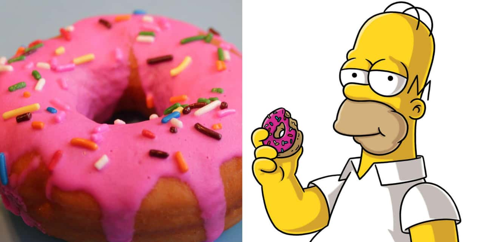

Homers Donuts
Homers donuts

Any fan of The Simpsons knows that Homer goes absolutely nuts for donuts with a pretty pink glaze.
Make some mouthwatering confections that Homer himself would be drooling over with this recipe
Ingredients
- 6 1/2 cups of all-purpose flour
- 1 1/2 teaspoons salt
- 1/2 teaspoons ground cinnamon
- 1/3 cup all-vegetable shortening
- 1 1/2 cups whole milk, warmed
- 1 teaspoon vanilla extract
- 1/3 cup warm water
- 4 1/2 teaspoons instant yeast
- 1 teaspoon sugar
- 2 whole eggs
- 1/4 cup sugar
- Flour for dusting
- Vegetable oil for frying
- Parchment paper
- 15-16 oz tub of ready made frosting in pink
- rainbow sprinkles
Steps
Donuts:
- Whisk the flour, salt, and cinnamon together in a large bowl.
- Put the shortening in a second bowl. Heat the milk in a microwave or on the stovetop,
then pour over the shortening and whisk until the shortening is melted.
- Pour warm water (110 F) into a third bowl, and sprinkle both packets of yeast on top. Add the sugar, and let it sit for 5 minutes.
Then, pour in the milk and shortening mixture. Add the eggs and the rest of the sugar, and mix on low with an electric mixer.
Mix in half of the flour mixture, then add in the rest of the flour mixture and mix on low for 1 minute. Move the speed up to medium and mix for 3-4 more minutes.
Cover the finished dough with a plate and let it rise for an hour.
- Cut some parchment paper into 4-inch squares.
- After the dough has doubled in size, dump it out onto a flour-covered surface. Knead it for two minutes until it is no longer sticky. Cut it in half, and roll out the dough to 1/2 inch thickness.
Cut out circles using a 3-inch cookie or biscuit cutter, and add center holes with a 1-inch cutter. Put the cut doughnuts onto the parchment paper squares.
- Add about 2 inches of oil in a large pot, and heat to 365 F. Heat the donuts in the oil until golden brown, making sure to flip them.
- Once they're fried, let them drain on a paper towel-covered plate, and cool them on a rack for 10-15 minutes.
frosting:
- Remove the lid and seal from the tub of icing, and heat in the microwave until it's liquid.
Spoon the frosting over the donuts and top with rainbow sprinkles. Let them set for about 15 minutes, and enjoy.